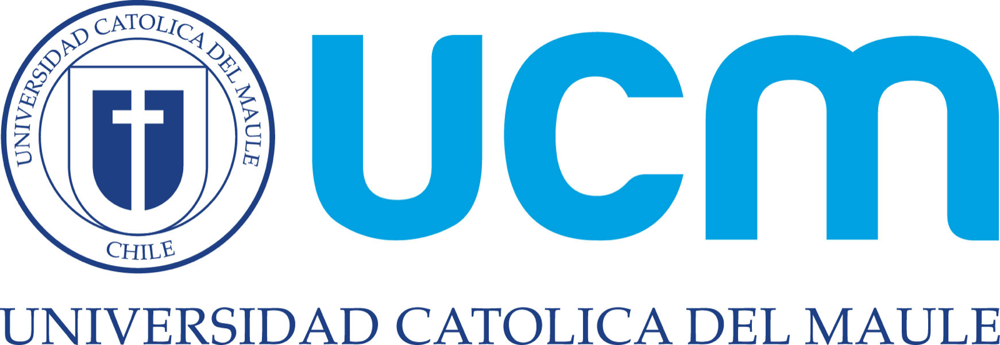
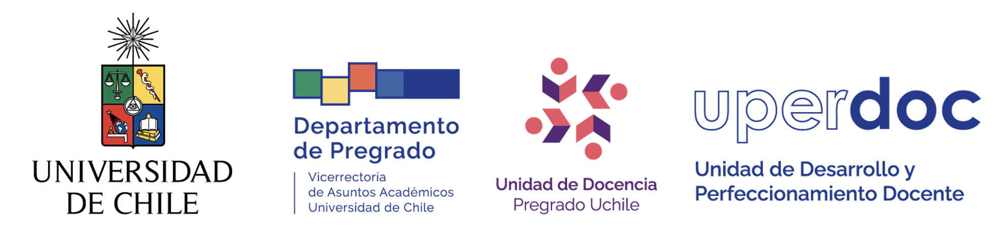
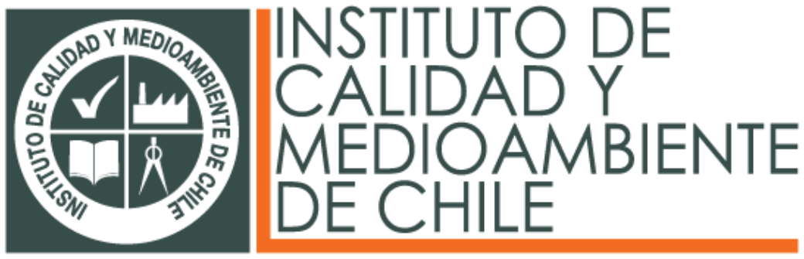

{{CARRUSEL}}
{{PUNTOS}}
-
{{CIFRAS}}
{{FILTROS}}
{{PIEZAS}}
Más trabajos
-
{{MAS}}
Estudios de caso
Cinco proyectos contados de principio a fin: el problema, el diseño, los recursos, la evaluación y el resultado. Cada uno abre con un video de proceso de un minuto.
{{CASOS}}
He trabajado con



También con educarchile y Altamira Capacitación Profesional.
Cómo trabajo
- {{PASOS}}